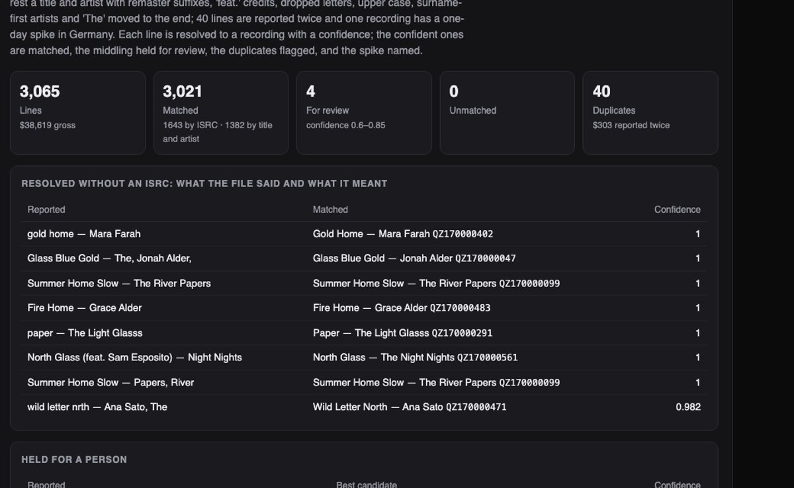
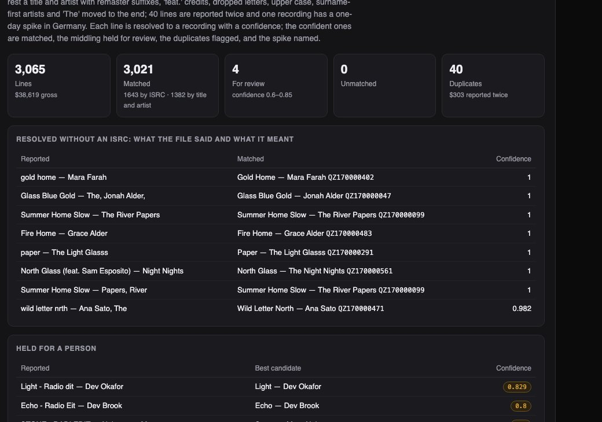
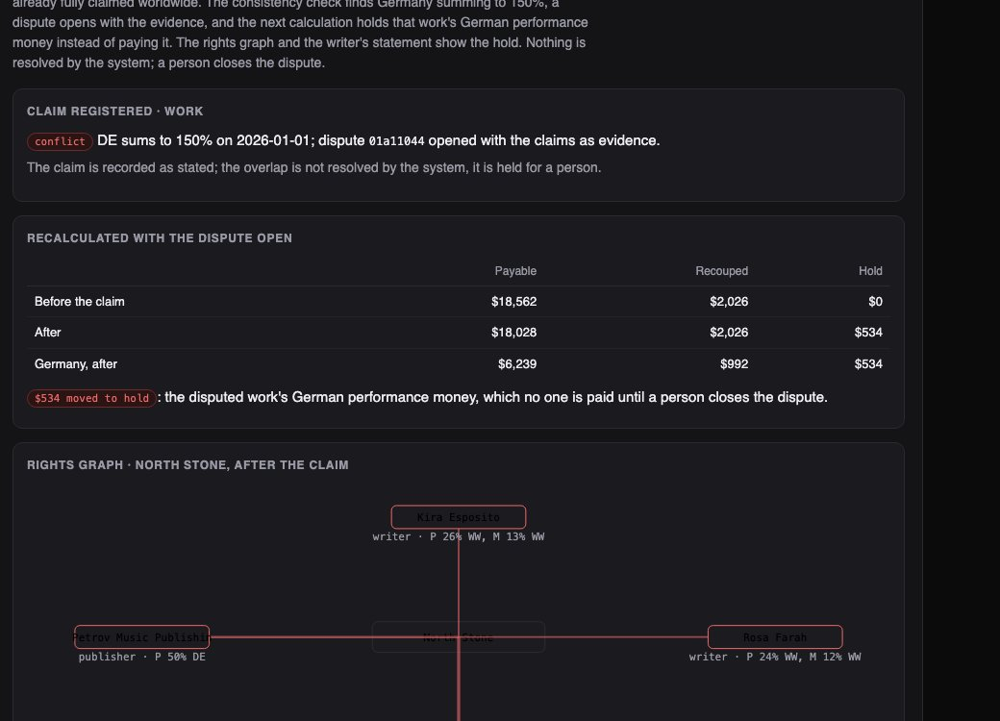

Python · Entity resolution · Rules engine · 2026-10
Who Gets Paid for This Play?
A rights ledger over an invented repertoire of 400 works and 586 recordings: usage files with damaged titles resolved from 54% matched by ISRC to nearly all at 98% precision, a clip matched by landmark fingerprint, royalties split by territory and contract with advances recouped, and an overlapping claim that holds $534 for a person to decide.

Built from a written blueprint as one vertical slice. The catalog is simulated: works, writers, publishers, labels, usage reports and audio come from a generator in the repository, which is what lets every match and every split be checked against the truth. No real song, person or company appears; the audio is synthetic tone sequences and the fingerprint is demonstrated on those. No language model is used. Not built: CWR/DDEX feeds, real audio, a learned matcher, cross-collateralised recoupment, currency, dispute workflow beyond open and resolve, Kafka, Terraform, single sign-on.
01 — The problem
A streaming service reports a play of 'gold home' by 'Farah, Ines' with no ISRC; a broadcaster reports 'ECHO - Radio Eit'. Somebody has to decide which recording that was, which work it embodies, who holds which share of which right in that territory on that date, whether the artist's advance is recouped yet, and what to do when two publishers both claim half of Germany. The tempting shortcut at every step is a rule that keeps the money flowing. Can software resolve the mess with an honest confidence, split the money by the contracts in force, and hold rather than guess when claims collide, with a trail behind every decision?
Blueprint 13 of fifteen in a third build book, built as its demo scenario end to end.
02 — What I built
A Python service on PostgreSQL with a background worker and a web page, started by one docker compose up.
- A catalog of works, recordings, parties, claims by right, territory and window, and label contracts with advances.
- Identity resolution for usage lines: ISRC first, then normalised title and artist with a confidence, a review band, duplicates and spikes.
- A landmark fingerprint that matches a clip to a recording and its offset, labelled for what it runs on.
- A royalty calculator: pools by source, claims in force, artist shares and recoupment, holds and unclaimed, every entry with its reason.
- Disputes opened by the consistency check with the claims as evidence, closed only by a person.
03 — How it was built
- 01
A repertoire with the usual shape
400 works with one to three writers and a publisher, 586 recordings with a label contract each (artist share 15–25%, an advance on about a third), master claims worldwide with a territorial licensee carved out on a third of recordings for a window, and 3,188 claims in all. The usage generator refers to recordings the way services do: an ISRC about half the time, otherwise a title with remaster suffixes, feat. credits, dropped letters and odd case, and an artist written surname-first or with 'The' moved to the end; forty lines repeated, one recording spiking in one territory on one day.
if r.random() < 0.3: t = t + r.choice([" (Remastered 2024)", " - Radio Edit", " [Live]", " (feat. …)"]) - 02
Resolving a line, with a confidence that means something
ISRC first. Otherwise the title is normalised (parentheticals, feat., remaster words removed), the artist reduced to a key that reads surname-first and 'The' the same way, candidates found by title token, and each scored 60/40 on sequence similarity; an ISRC off by one check character scores 0.9. At 0.85 and above the line is matched, between 0.6 and 0.85 a person sees it, below that it is unmatched. On the demo file: 3,021 of 3,065 matched, 4 for review, 40 duplicates. On three other catalogs: 98% precision, and most misses are another recording of the same work.
s = 0.6 * ratio(title_key, r_title) + 0.4 * ratio(artist_key, r_artist) - 03
A fingerprint that says what it runs on
Spectrogram peaks, the strongest few per frame, paired with peaks six to sixty frames later so the hashes carry the melody rather than the harmonics; a clip votes on (recording, time offset) with offsets binned, and a match is confident at eight aligned votes and twice the runner-up. The demo clip matches its recording at the right offset with 64 votes. The evaluation is equally plain: 93–97% on clean synthetic clips, 23–33% at ten decibels of noise, because tone sequences have a handful of harmonics where real music has dense spectra. The method is the standard one; the audio is not music.
key = (rec, (f0 - f) // 3) # the clip's frame grid is not the recording's votes[key] += 1 - 04
The split, with every dollar accounted for
Each matched line's gross goes into pools by source (streaming 52% master, 6.5% mechanical, 6.5% performance; broadcast 22% performance); each pool is split by the claims in force for that territory and date, worldwide claims yielding to their carve-outs. A label contract takes the artist's share and recoups the advance before paying it. No claim in force makes the money unclaimed; claims that do not sum to one make it held. Entries total the pools to the cent, and each carries the sentence that explains it.
take = min(owed, art_amt) entries.append({"party": k["artist"], "amount": take, "status": "recouped", "note": f"against advance {k['advance']:.0f}"}) - 05
Hold, do not guess
A second publisher registers a 50% performance claim in Germany on a work already fully claimed. The consistency check finds Germany summing to 150% on every sample date, a dispute opens with the four claims as its evidence, and the next calculation holds the German performance money of that work, $534 that was payable a moment earlier, while every other territory pays as before. The rights graph draws the conflict in red. A person closes the dispute; even then the overlapping claim stands until a person changes it, and the hold returns on the next run.
disputed = key in hold_assets and (hold_assets[key] is None or line["territory"] in hold_assets[key])
04 — Results
The demo. A quarter's usage resolved, with what the file said beside what it meant:

The overlapping claim and the money moved to hold:

On three other simulated catalogs:
| System | Baseline | |
|---|---|---|
| Usage lines matched | ~100% | 54–56% by exact ISRC |
| Auto-match precision | 98.2–98.4% | – |
| Clip match, 8 s at 20 dB SNR | 93–97% | – |
| Clip match, 8 s at ~10 dB SNR | 23–33% | – |
| Royalty conservation | to the cent | – |
| Injected overlapping claims found | 60 of 60 | – |
Resolution nearly doubles the matched share at a little under 99% precision; the misses mostly pick another recording of the same work. The fingerprint works on clean synthetic clips and fails at modest noise, and the page says why. The split and the conflict check are arithmetic and behave like it.
Honest limits. Generated identifiers and files; synthetic audio; one advance per recording in one currency; disputes that only open and close.
Checks. 12 tests, including: every work's rights sum to one and worldwide master claims yield to their carve-outs, normalisation and artist keys behave, resolution precision above 97% with all duplicates found and the spike named, a clean clip matches at the right offset and noisy ones do worse, the consistency check finds an injected overlap and respects its window, the split conserves the pool and recoups and holds, a 120% writer share and an unknown territory are refused, a dispute cannot be closed twice, and one rights holder cannot see another's catalog.
05 — What I'd do next
- A learned matcher trained on the review queue's decisions, with its precision measured against this one.
- Real public audio for the fingerprint, with the honest number that follows.
- Cross-collateralised recoupment and currency, which is where the rules engine starts to earn its name.